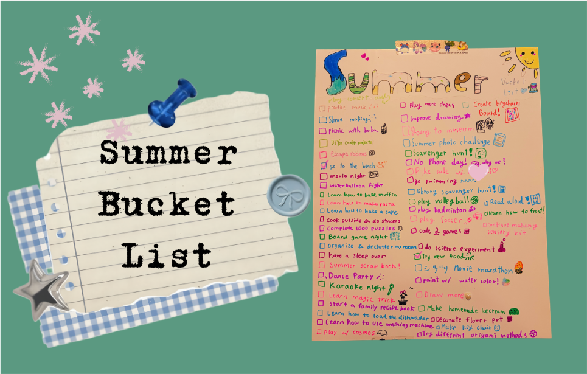
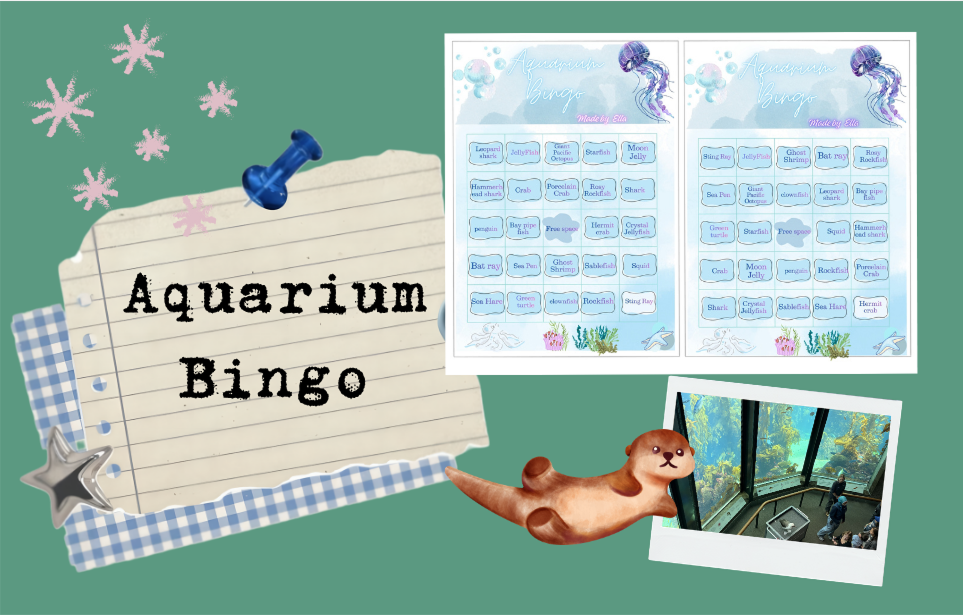
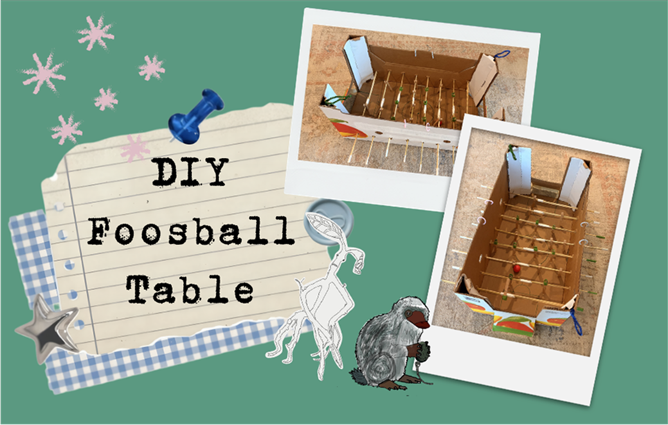

デザイナーとして（もともとはプロダクトデザインを学んでいました）、私はいつも「アイデアが形になる過程」に興味を持っています。
これまでさまざまな場面で子どもたちと関わる中で感じてきたのは、子どもの創造性は、自由に考えられる環境と、それを支える道具や声かけがあってこそ大きく育つということです。絵を描くことも、何かを作ることも、ゲームを考えることも、子どもたちは自然と試し、学び、改善しながら進んでいきます。
この夏は、私が主導するのではなく、娘のアイデアについていくことを意識してみました。私の役割は、材料を用意し、質問を投げかけ、必要なときに手伝うこと。
今回は、この夏これまでに一緒に作った3つのプロジェクトと、そこから学んだことを紹介します。よかったら、最後まで読んでみてください✨

1. サマーバケットリスト
サマーバケットリストは、一見するととてもシンプルな活動です。でも実際に作ってみると、思った以上にたくさんのことを考えていることに気づきました。
「どんな夏を過ごしたい？」
「どんな体験をしてみたい？」
「現実的にできそうなことは？」
「今年の夏を特別なものにするには？」
そんなことを話しながら、一緒にアイデアを出していきました。
完成したリストは、単なる「やりたいこと一覧」ではなく、これから迎える夏を思い描くための地図のような存在になりました。
また、自分で決めたリストがあることで、娘自身が積極的に「次はこれをやりたい！」と提案するようになったのも印象的でした。
もちろん、夏の過ごし方は家庭によってさまざまですが、私たちにとっては、限られた夏の時間をどう過ごしたいかを考える楽しいきっかけになりました。
💡学んだこと：
「どんな夏にしたいか」を想像し、それを形にする過程には、たくさんの創造力と意思決定が詰まっています。その時間自体が、夏をより楽しみにしてくれるきっかけになりました。

2. 水族館ビンゴ
この夏、水族館へ行く計画を立てていたとき、娘が「見つけた生き物に印をつけるビンゴカードを作ったら面白いんじゃない？」と提案しました。
素敵なアイデアだなぁ〜と思ったのは、水族館がちょっとした宝探しのようになるからです。
事前に水族館にいる生き物を調べ、どの生き物をカードに入れるかを娘自身が選びました。その過程で、私も娘も知らなかった生き物の名前をたくさん知ることができました。
実際にやってみると、思ってた通りとても楽しい体験になりました。一緒に探す対象があることで、水族館をいつもとは違う視点で楽しめたからです。
一方で、予想外の発見もありました。ビンゴに夢中になるあまり、生き物をじっくり観察する時間が少し減ってしまった場面もあったのです。
でも、それもまた作ることの面白さだと思います。うまくいかなかったことから学べることは、意外とたくさんあります。
💡学んだこと：
アイデアが良いだけでは、使いやすい体験になるとは限りません。カードのサイズや持ち運び方、スタンプのような付属品の有無など、小さなデザインの選択が使い心地を大きく左右します。
ビンゴ自体はとても楽しかったのですが、実際に使ってみたからこそ「次はこう改善したい」というアイデアもたくさん見えてきました。

3. ダンボールで作るDIYテーブルサッカー
このプロジェクトは、完全に娘のアイデアから始まりました。
家にあったCostcoの大きなダンボール箱を見て、「テーブルサッカーが作れそう！」と思ったそうです。
そこからは試行錯誤の連続でした。
「選手はどう取り付ける？」
「棒の長さは？」
「スコアはどう数える？」
「棒が中に滑り込まないようにするには？」
「ゴールをもっと分かりやすくするには？」
そして何より、チームらしさをどう出す？
今のところ、娘の設計図に合わせて8本の棒を取り付け、木製の洗濯ばさみを選手として使っています。さらに、片方のチームには緑色のマスキングテープを巻いて区別できるようにしました。現在は両サイドにスコアボードを追加しているところです。
チーム名は『ファンタスティック・ビースト』に登場するニフラーとボウトラックルから取って、「チーム・ニフラー」と「チーム・ボウトラックル」。娘はProcreateでキャラクターを描き、私はそれを印刷してゲームに取り付けるお手伝いをしました。
まだまだ制作途中で、追加したい機能や改善したい部分がたくさんあります。
このプロジェクトで私が特に好きなのは、娘が「未完成」を問題だと思っていないことです。彼女にとって未完成とは、「次に作るものがまだ残っている」ということ。
うまくいくまで違う方法を試し続ける姿勢にも感心しました。大人は結果や完成度を気にして、なかなか始められないことがあります。でも子どもたちはまずやってみて、そのあとで考えることができます。
💡学んだこと：
アイデアは最初から完成している必要はありません。実際に作ってみて、遊んでみて、改善する。その繰り返しの中で少しずつ形になっていきます。
その過程で、問いかけを重ねながら本人の考えを引き出し、一緒にどう改善できるかを考えていくことの大切さを改めて感じました。
この夏の小さな気づき
この夏のプロジェクトは、今のところ私のお気に入りの活動ばかりです。
それは完成度が高かったからでも、大きな成果があったからでもありません。純粋な「やってみたい！」という気持ちと好奇心から始まったものだったからです。
娘のアイデアについていき、どんな方向へ広がっていくのかを見守る中で、私自身もたくさんのことを学びました。
そして、夏はまだ始まったばかり。次はどんなものを作り、デザインし、発明するのでしょうか。
もしよければ、また次回のブログものぞきに来てください。私たちの夏のプロジェクトは、まだまだ続きそうです。 😊